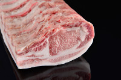
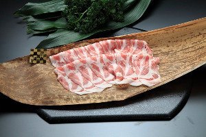
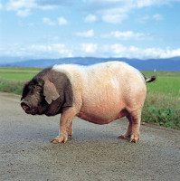
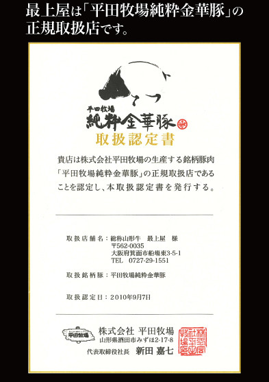

純粋金華豚
国内で限られた生産量（1日2～3頭）「純粋金華豚」ってどういう豚？
1988年に平田牧場が中国より導入しました。
もともと純粋金華豚は中国浙江省金華が原産の豚で、
最高級中華食材「金華ハム」の原料として知られています。
掛合せた平牧金華豚ではありません！
掛合せていない金華豚、それが「純粋金華豚」です。
高価で希少、幻と言われる豚
頭と尻尾だけが黒い独特の風貌は金華豚純粋種の証です。
パークシャー種（黒豚）よりもさらに小さく、さらに成熟日数も多く
かかる品種であることが、高価で希少、幻と言われる由縁です。
身体が小さく成熟日数も長くかかるため経済効率が悪く、
非常に割高な豚肉になってしまいます。
おこめ育ち金華豚は、普通の豚肉と比べ優れた味わいを持っていますので、
格段の違いを実感して頂けることでしょう。

①飼育環境へのこだわり
一般的な豚よりも長めに、純粋金華豚は約230日、肥育しています（一般豚約160日）。
開放豚舎で、のびのびとゆっくり育てることで、ストレスを感じない健康な豚が育ちます。
衛生環境のよい豚舎で育てることで、豚特有の臭みがありません。
②飼料へのこだわり
餌には遺伝子組み換えのない（NON-GMO）、トウモロコシ、大豆粕、大麦、飼料用米を与えています。
NON-GMOの選別は現代では大変難しくなってきています。さらにトウモロコシはポストハーベストフリー（PHF）（収穫後、無農薬）のものを使用。
③飼料用米について
山形県の使っていない田んぼ（休耕田）を利用して餌の米を作ることによって、日本の食糧自給率の向上へも貢献しています。
食味もさらにアップ！脂が甘くなります。